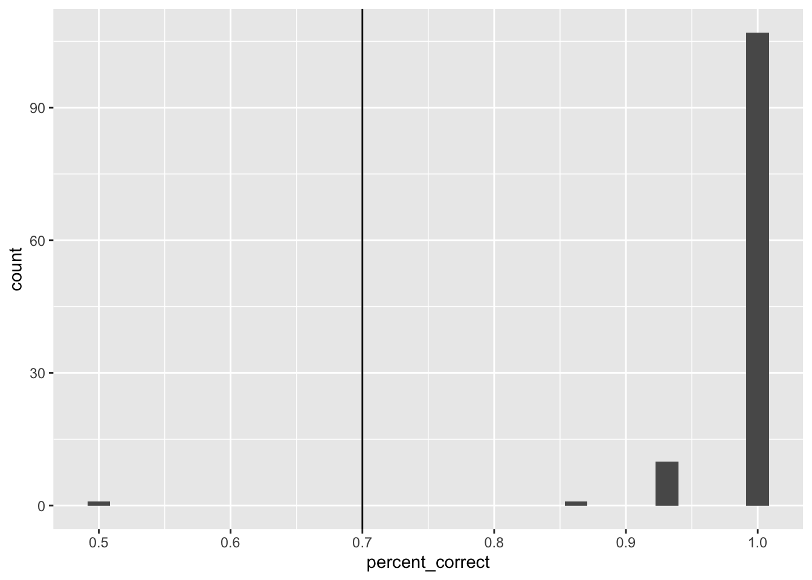
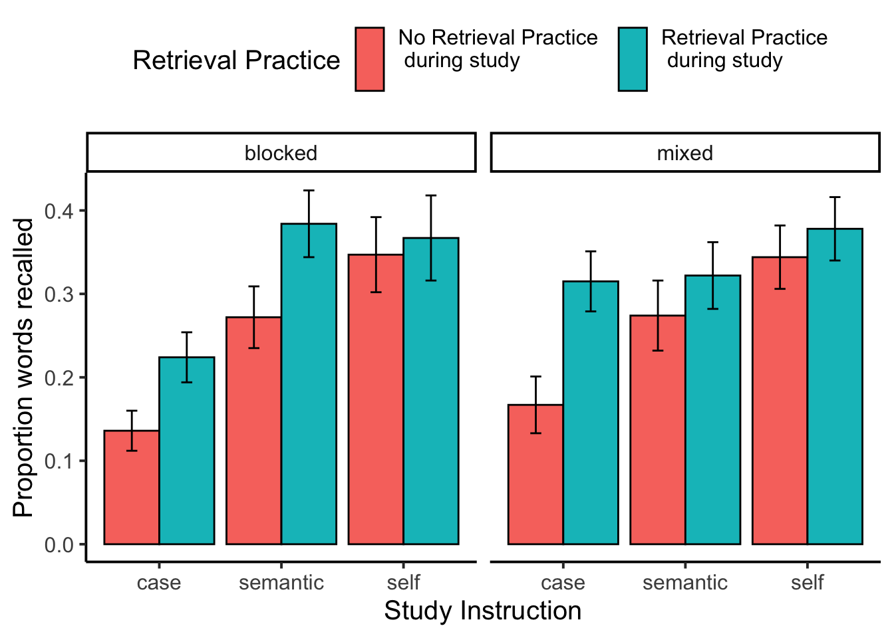
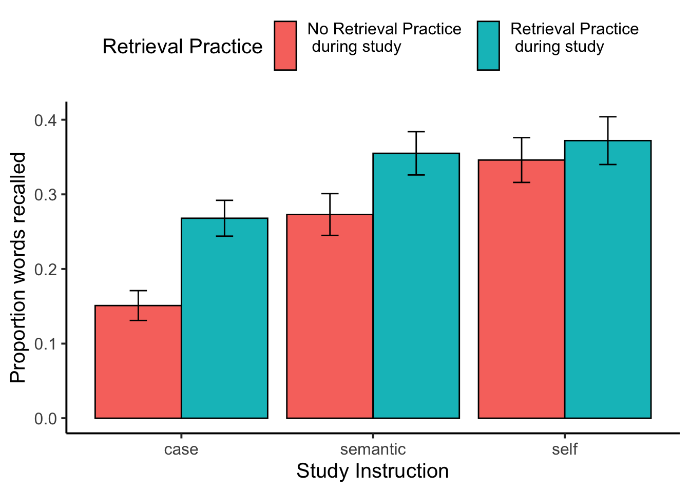

library(dplyr)
library(tidyverse)
library(jsonlite)
library(xtable)
library(data.table)E1_combined
Combination of mturk and sona
Load libraries
Import Data
# Read the text file from JATOS ...
read_file('data/E1B_self_reference_deID.JSON') %>%
# ... split it into lines ...
str_split('\n') %>% dplyr::first() %>%
# ... filter empty rows ...
discard(function(x) x == '') %>%
# ... parse JSON into a data.frame
map_dfr(fromJSON, flatten=T) -> all_data_mturk
read_file('data/E1C_self_reference_deID.JSON') %>%
# ... split it into lines ...
str_split('\n') %>% dplyr::first() %>%
# ... filter empty rows ...
discard(function(x) x == '') %>%
# ... parse JSON into a data.frame
map_dfr(fromJSON, flatten=T) -> all_data_sona
all_data_sona <- all_data_sona %>%
mutate(ID = paste0(ID,"sona"))
all_data <- rbind(all_data_mturk,all_data_sona)Demographics
library(tidyr)
demographics <- all_data %>%
filter(trial_type == "survey-html-form") %>%
select(ID,response) %>%
unnest_wider(response) %>%
mutate(age = as.numeric(age))
age_demographics <- demographics %>%
summarize(mean_age = mean(age),
sd_age = sd(age),
min_age = min(age),
max_age = max(age))
factor_demographics <- apply(demographics[-1], 2, table)A total of 121 participants were recruited from Amazon’s Mechanical Turk. Mean age was NA (range = NA to NA ). There were 78 females, and 39 males. There were 105 right-handed participants, and 12 left or both handed participants. 58 participants reported normal vision, and 53 participants reported corrected-to-normal vision. 94 participants reported English as a first language, and 23 participants reported English as a second language.
Pre-processing
50 workers from Amazon’s Mechanical Turk were paid $2.00 to complete this task. The only restriction was to limit workers to the US locale. Typewritten responses during the recall portion indicated that some of the participants were not completing the task as intended. For example, some of the responses appeared to be written by a chatbot, and did not contain words from the experiment.
We were were interested in analyzing data from participants who appeared to engage with the task as intended. To identify participants for inclusion we used accuracy data from the case judgment task. We included participants if their accuracy was 70% or greater.
Case judgment accuracy
Get case judgment accuracy for all participants.
case_judgment <- all_data %>%
filter(encoding_trial_type == "study_word",
study_instruction == "case") %>%
mutate(response = as.character(unlist(response))) %>%
mutate(accuracy = case_when(
response == "0" & letter_case == "upper" ~ 1,
response == "1" & letter_case == "upper" ~ 0,
response == "0" & letter_case == "lower" ~ 0,
response == "1" & letter_case == "lower" ~ 1
)) %>%
group_by(ID) %>%
summarise(percent_correct = mean(accuracy))
ggplot(case_judgment, aes(x=percent_correct))+
geom_histogram() +
geom_vline(xintercept=.7)
Response bias
Check to see whether participants pressed one button all of the time. Not used for exclusion.
# get response bias
response_bias <- all_data %>%
filter(encoding_trial_type == "study_word") %>%
mutate(response = as.character(unlist(response))) %>%
group_by(ID,study_instruction) %>%
count(response)post-task questions
post_questions <- all_data %>%
filter(trial_type == "survey-text") %>%
select(ID,response) %>%
unnest_wider(response)All exclusions
no exclusions
all_excluded <- case_judgment %>%
filter(percent_correct < .7) %>%
select(ID) %>%
pull()
length(all_excluded)[1] 1filtered_data <- all_data %>%
filter(ID %in% all_excluded == FALSE) Accuracy analysis
Define Helper functions
To do, consider moving the functions into the R package for this project
# attempt general solution
## Declare helper functions
################
# get_mean_sem
# data = a data frame
# grouping_vars = a character vector of factors for analysis contained in data
# dv = a string indicated the dependent variable colunmn name in data
# returns data frame with grouping variables, and mean_{dv}, sem_{dv}
# note: dv in mean_{dv} and sem_{dv} is renamed to the string in dv
get_mean_sem <- function(data, grouping_vars, dv, digits=3){
a <- data %>%
group_by_at(grouping_vars) %>%
summarize("mean_{ dv }" := round(mean(.data[[dv]]), digits),
"sem_{ dv }" := round(sd(.data[[dv]])/sqrt(length(.data[[dv]])),digits),
.groups="drop")
return(a)
}
################
# get_effect_names
# grouping_vars = a character vector of factors for analysis
# returns a named list
# list contains all main effects and interaction terms
# useful for iterating the computation means across design effects and interactions
get_effect_names <- function(grouping_vars){
effect_names <- grouping_vars
if( length(grouping_vars > 1) ){
for( i in 2:length(grouping_vars) ){
effect_names <- c(effect_names,apply(combn(grouping_vars,i),2,paste0,collapse=":"))
}
}
effects <- strsplit(effect_names, split=":")
names(effects) <- effect_names
return(effects)
}
################
# print_list_of_tables
# table_list = a list of named tables
# each table is printed
# names are header level 3
print_list_of_tables <- function(table_list){
for(i in 1:length(table_list)){
cat("###",names(table_list[i]))
cat("\n")
print(knitr::kable(table_list[[i]]))
cat("\n")
}
}Conduct Analysis
Study phase immediate recall
# get recall proportion correct for each participant
study_phase_recall <- filtered_data %>%
filter(phase == "study_recall",
encoding_recall == "recall") %>%
separate(col = paragraph,
into = c("first_word","second_word"),
sep = " ",
remove = FALSE,
extra = "merge") %>%
mutate(accuracy = tolower(target_word) == tolower(first_word),
study_instruction = factor(study_instruction, levels= c("case","semantic","self"))) %>%
group_by(ID,study_instruction) %>%
summarize(percent_correct = mean(accuracy))
# get means in each question condition
study_phase_recall_means <- get_mean_sem(study_phase_recall,
grouping_vars = c("study_instruction"),
dv = "percent_correct")
# run ANOVA
study_phase_recall <- study_phase_recall %>%
ungroup() %>%
mutate(ID = as.factor(ID),
study_instruction = as.factor(study_instruction))
study_phase_recall_aov <- aov(percent_correct ~ study_instruction + Error(ID/study_instruction),
study_phase_recall)
# save printable summaries
study_phase_recall_apa_print <- papaja::apa_print(study_phase_recall_aov)
knitr::kable(study_phase_recall_means)| study_instruction | mean_percent_correct | sem_percent_correct |
|---|---|---|
| case | 0.873 | 0.018 |
| semantic | 0.918 | 0.011 |
| self | 0.905 | 0.015 |
During the encoding phase participants attempted to immediately recall half of the words following the primary judgment. We computed proportion of correctly recalled words for each participant separately in each encoding question condition. These means were submitted to a one-way repeated measures ANOVA, with question type as the sole factor. Mean proportion correctly recalled was 0.873 in the case judgment, 0.918 in the semantic judgment, and 0.905 in the self-reference condition; \(F(2, 234) = 4.03\), \(\mathit{MSE} = 0.02\), \(p = .019\), \(\hat{\eta}^2_G = .014\).
Study phase word judgment
# get recall proportion correct for each participant
study_phase_judgment <- filtered_data %>%
filter(phase == "main_study",
encoding_trial_type == "study_word") %>%
mutate(accuracy = case_when(study_instruction == "case" &
letter_case == "lower" &
response == 1 ~ TRUE,
study_instruction == "case" &
letter_case == "lower" &
response == 0 ~ FALSE,
study_instruction == "case" &
letter_case == "upper" &
response == 0 ~ TRUE,
study_instruction == "case" &
letter_case == "upper" &
response == 1 ~ TRUE,
study_instruction == "semantic" &
likeable == "low" &
response == 0 ~ FALSE,
study_instruction == "semantic" &
likeable == "low" &
response == 1 ~ TRUE,
study_instruction == "semantic" &
likeable == "high" &
response == 0 ~ TRUE,
study_instruction == "semantic" &
likeable == "high" &
response == 1 ~ FALSE,
study_instruction == "self" &
likeable == "low" &
response == 0 ~ FALSE,
study_instruction == "self" &
likeable == "low" &
response == 1 ~ TRUE,
study_instruction == "self" &
likeable == "high" &
response == 0 ~ TRUE,
study_instruction == "self" &
likeable == "high" &
response == 1 ~ FALSE
),
study_instruction = factor(study_instruction,
levels= c("case","semantic","self"))) %>%
group_by(ID,study_instruction) %>%
summarize(percent_correct = mean(accuracy)) %>%
ungroup()
# get means in each question condition
study_phase_judgment_means <- get_mean_sem(study_phase_judgment,
grouping_vars = c("study_instruction"),
dv = "percent_correct")
knitr::kable(study_phase_judgment_means)| study_instruction | mean_percent_correct | sem_percent_correct |
|---|---|---|
| case | 0.999 | 0.001 |
| semantic | 0.961 | 0.006 |
| self | 0.782 | 0.015 |
For completeness we report mean performance in the encoding phase for each of the word judgment condition. See above table.
Recall Test
# obtain recall data from typed answers
recall_data <- filtered_data %>%
filter(phase %in% c("recall_1","recall_2") == TRUE ) %>%
select(ID,phase,paragraph) %>%
pivot_wider(names_from = phase,
values_from = paragraph) %>%
mutate(recall_1 = unlist(lapply(recall_1,"[[",1)),
recall_2 = unlist(lapply(recall_2,"[[",1))) %>%
mutate(recall_1 = paste(recall_1,recall_2,sep = " ")) %>%
select(ID,recall_1) %>%
# separate_longer_delim(cols = recall_1,
# delim = " ") %>%
mutate(recall_1 = tolower(recall_1)) %>%
mutate(recall_1 = gsub("[^[:alnum:][:space:]]","",recall_1))
encoding_words_per_subject <- filtered_data %>%
filter(encoding_trial_type == "study_word",
phase == "main_study")
recall_data <- left_join(encoding_words_per_subject,recall_data,by = 'ID') %>%
mutate(recall_1 = strsplit(recall_1," "))
# implement a spell-checking method
recall_success <- c()
min_string_distance <- c()
for(i in 1:dim(recall_data)[1]){
recalled_words <- unlist(recall_data$recall_1[i])
recalled_words <- recalled_words[recalled_words != ""]
if (length(recalled_words) == 0 ) recalled_words <- "nonerecalled"
recall_success[i] <- tolower(recall_data$target_word[i]) %in% recalled_words
min_string_distance[i] <- min(sapply(recalled_words,FUN = function(x) {
stringdist::stringdist(a=x,b = tolower(recall_data$target_word[i]), method = "lv")
}))
}
# recall proportion correct by subject
# correct for unequal conditions. 4 words in recall, 8 words in no recall
recall_data_subject <- recall_data %>%
mutate(recall_success = recall_success,
min_string_distance = min_string_distance) %>%
mutate(close_recall = min_string_distance <= 2) %>%
group_by(ID,study_instruction,encoding_recall,block_type) %>%
summarise(number_recalled = sum(recall_success),
number_close_recalled = sum(close_recall)) %>%
ungroup() %>%
mutate(proportion_recalled = case_when(encoding_recall == "no_recall" ~ number_close_recalled/6,
encoding_recall == "recall" ~ number_close_recalled/6)) %>%
mutate(ID = as.factor(ID),
study_instruction = as.factor(study_instruction),
encoding_recall = as.factor(encoding_recall),
block_type = as.factor(block_type))
# Condition means
mean_recall_data <- get_mean_sem(recall_data_subject,
c("study_instruction","encoding_recall", "block_type"),
"proportion_recalled") %>%
ungroup() %>%
mutate(study_instruction = factor(study_instruction,levels = c("case","semantic","self")),
`Retrieval Practice` = case_when(
encoding_recall == "no_recall" ~ "No Retrieval Practice \n during study \n",
encoding_recall == "recall" ~ "Retrieval Practice \n during study \n",
))
recall_plot <- ggplot(mean_recall_data,
aes(x = study_instruction,
y = mean_proportion_recalled,
fill= `Retrieval Practice`))+
geom_bar(stat="identity",position="dodge",color="black") +
geom_errorbar(aes(ymin = mean_proportion_recalled - sem_proportion_recalled,
ymax = mean_proportion_recalled + sem_proportion_recalled),
width=.9, position=position_dodge2(width = 0.2, padding = 0.8)) +
ylab("Proportion words recalled")+
xlab("Study Instruction") +
theme_classic(base_size = 15)+
theme(legend.position = "top")+
facet_wrap(~block_type)
recall_plot
Recall test ANOVA
## Condition-level means
# get all possible main effects and interactions
recall_effect_names <- get_effect_names(c("block_type","encoding_recall", "study_instruction"))
recall_effect_means <- lapply(recall_effect_names, FUN = function(x) {
get_mean_sem(data=recall_data_subject,
grouping_vars = x,
dv = "proportion_recalled") %>%
as.data.table()
})
# run ANOVA
recall_aov <- aov(proportion_recalled ~ block_type*encoding_recall*study_instruction + Error(ID/(study_instruction*encoding_recall)), data = recall_data_subject)
# save printable summaries
recall_apa_print <- papaja::apa_print(recall_aov)
knitr::kable(xtable(summary(recall_aov)))| Df | Sum Sq | Mean Sq | F value | Pr(>F) | |
|---|---|---|---|---|---|
| block_type | 1 | 0.1618656 | 0.1618656 | 1.3525608 | 0.2472178 |
| Residuals | 116 | 13.8821159 | 0.1196734 | NA | NA |
| study_instruction | 2 | 1.7205744 | 0.8602872 | 23.2130614 | 0.0000000 |
| block_type:study_instruction | 2 | 0.0610239 | 0.0305120 | 0.8233016 | 0.4402583 |
| Residuals | 232 | 8.5980313 | 0.0370605 | NA | NA |
| encoding_recall | 1 | 0.6528955 | 0.6528955 | 26.2258962 | 0.0000012 |
| block_type:encoding_recall | 1 | 0.0102025 | 0.0102025 | 0.4098207 | 0.5233230 |
| Residuals | 116 | 2.8878279 | 0.0248951 | NA | NA |
| encoding_recall:study_instruction | 2 | 0.1207627 | 0.0603814 | 2.5906930 | 0.0771359 |
| block_type:encoding_recall:study_instruction | 2 | 0.0738586 | 0.0369293 | 1.5844697 | 0.2072673 |
| Residuals | 232 | 5.4072306 | 0.0233070 | NA | NA |
Collapse over blocking variable
mean_recall_data_collapsed <- get_mean_sem(recall_data_subject,
c("study_instruction","encoding_recall"),
"proportion_recalled") %>%
ungroup() %>%
mutate(study_instruction = factor(study_instruction,levels = c("case","semantic","self")),
`Retrieval Practice` = case_when(
encoding_recall == "no_recall" ~ "No Retrieval Practice \n during study \n",
encoding_recall == "recall" ~ "Retrieval Practice \n during study \n",
))
recall_plot_collapsed <- ggplot(mean_recall_data_collapsed,
aes(x = study_instruction,
y = mean_proportion_recalled,
fill= `Retrieval Practice`))+
geom_bar(stat="identity",position="dodge",color="black") +
geom_errorbar(aes(ymin = mean_proportion_recalled - sem_proportion_recalled,
ymax = mean_proportion_recalled + sem_proportion_recalled),
width=.9, position=position_dodge2(width = 0.2, padding = 0.8)) +
ylab("Proportion words recalled")+
xlab("Study Instruction") +
theme_classic(base_size = 15)+
theme(legend.position = "top")
recall_plot_collapsed
## Condition-level means
# get all possible main effects and interactions
recall_effect_names_collapsed <- get_effect_names(c("encoding_recall", "study_instruction"))
recall_effect_means_collapsed <- lapply(recall_effect_names_collapsed, FUN = function(x) {
get_mean_sem(data=recall_data_subject,
grouping_vars = x,
dv = "proportion_recalled") %>%
as.data.table()
})
# run ANOVA
recall_aov_collapsed <- aov(proportion_recalled ~ encoding_recall*study_instruction + Error(ID/(study_instruction*encoding_recall)), data = recall_data_subject)
# save printable summaries
recall_apa_print_collapsed <- papaja::apa_print(recall_aov_collapsed)
knitr::kable(xtable(summary(recall_aov_collapsed)))| Df | Sum Sq | Mean Sq | F value | Pr(>F) | |
|---|---|---|---|---|---|
| Residuals | 117 | 14.0439815 | 0.1200340 | NA | NA |
| study_instruction | 2 | 1.7205744 | 0.8602872 | 23.248172 | 0.0000000 |
| Residuals | 234 | 8.6590552 | 0.0370045 | NA | NA |
| encoding_recall | 1 | 0.6528955 | 0.6528955 | 26.358857 | 0.0000011 |
| Residuals | 117 | 2.8980304 | 0.0247695 | NA | NA |
| encoding_recall:study_instruction | 2 | 0.1207627 | 0.0603814 | 2.577816 | 0.0780951 |
| Residuals | 234 | 5.4810891 | 0.0234235 | NA | NA |
simple effects
Compare retrieval practice vs no retrieval practice for each judgment condition
# Self condition
# Retrieval practice vs no retrieval practice
self_retrieval_practice <- recall_data_subject %>%
filter(study_instruction == "self")
self_retrieval_practice_t <- t.test(proportion_recalled ~ encoding_recall, paired = TRUE, data= self_retrieval_practice)
self_retrieval_practice_t_apa <- papaja::apa_print(self_retrieval_practice_t)
# Semantic condition
# Retrieval practice vs no retrieval practice
semantic_retrieval_practice <- recall_data_subject %>%
filter(study_instruction == "semantic")
semantic_retrieval_practice_t <- t.test(proportion_recalled ~ encoding_recall, paired = TRUE, data= semantic_retrieval_practice)
semantic_retrieval_practice_t_apa <- papaja::apa_print(semantic_retrieval_practice_t)
# Case condition
# Retrieval practice vs no retrieval practice
case_retrieval_practice <- recall_data_subject %>%
filter(study_instruction == "case")
case_retrieval_practice_t <- t.test(proportion_recalled ~ encoding_recall, paired = TRUE, data= case_retrieval_practice)
case_retrieval_practice_t_apa <- papaja::apa_print(case_retrieval_practice_t)Compare self-reference vs. semantic separately for retrieval and no-retrieval conditions.
# self reference effect in no retrieval practice condition
self_semantic_no_retrieval <- recall_data_subject %>%
filter(study_instruction %in% c("self","semantic") == TRUE,
encoding_recall == "no_recall")
self_semantic_no_retrieval_t <- t.test(proportion_recalled ~ study_instruction, paired = TRUE, data= self_semantic_no_retrieval)
self_semantic_no_retrieval_t_apa <- papaja::apa_print(self_semantic_no_retrieval_t)
# self reference effect in retrieval practice condition
self_semantic_retrieval <- recall_data_subject %>%
filter(study_instruction %in% c("self","semantic") == TRUE,
encoding_recall == "recall")
self_semantic_retrieval_t <- t.test(proportion_recalled ~ study_instruction, paired = TRUE, data= self_semantic_retrieval)
self_semantic_retrieval_t_apa <- papaja::apa_print(self_semantic_retrieval_t)Write-up
# use data.table
#t <- as.data.table(Accuracy$means$`encoding_stimulus_time:encoding_instruction`)
#t[encoding_stimulus_time==500 & encoding_instruction == "F"]$mean_correctResults
There was a main effect of encoding question, \(F(2, 234) = 23.25\), \(\mathit{MSE} = 0.04\), \(p < .001\), \(\hat{\eta}^2_G = .052\). Mean proportion recall was lowest in the case condition (M = 0.143, SEM = 0.012), higher for the semantic condition (M = 0.219, SEM = 0.014), and highest for the self condition (M = 0.263, SEM = 0.015).
The retrieval practice effect was also significant, \(F(1, 117) = 26.36\), \(\mathit{MSE} = 0.02\), \(p < .001\), \(\hat{\eta}^2_G = .021\). Mean proportion recall was lower for items that did not receive retrieval practice (M = 0.178, SEM = 0.011), compared to items that did receive retrieval practice (M = 0.239, SEM = 0.012).
The interaction between retrieval practice and encoding question approached significance, \(F(2, 234) = 2.58\), \(\mathit{MSE} = 0.02\), \(p = .078\), \(\hat{\eta}^2_G = .004\).
save data
save.image("data/E1_combined.RData")